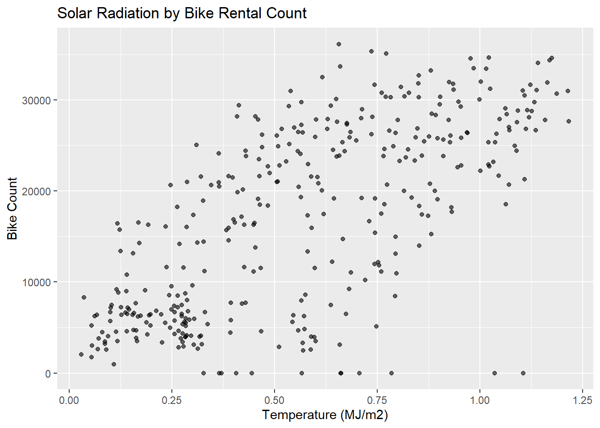

The first step will be to read in the data and to do so we will download the data directly from a website and then read it in using functions from the tidyverse.
# Loading libraryslibrary(tidyverse)
── Attaching core tidyverse packages ──────────────────────── tidyverse 2.0.0 ──
✔ dplyr 1.1.4 ✔ readr 2.1.5
✔ forcats 1.0.0 ✔ stringr 1.5.1
✔ ggplot2 3.5.1 ✔ tibble 3.2.1
✔ lubridate 1.9.3 ✔ tidyr 1.3.1
✔ purrr 1.0.2
── Conflicts ────────────────────────────────────────── tidyverse_conflicts() ──
✖ dplyr::filter() masks stats::filter()
✖ dplyr::lag() masks stats::lag()
ℹ Use the conflicted package (<http://conflicted.r-lib.org/>) to force all conflicts to become errors
# Loading in the databike_data <-read_csv("https://www4.stat.ncsu.edu/~online/datasets/SeoulBikeData.csv", locale =locale(encoding ="latin1"))
Rows: 8760 Columns: 14
── Column specification ────────────────────────────────────────────────────────
Delimiter: ","
chr (4): Date, Seasons, Holiday, Functioning Day
dbl (10): Rented Bike Count, Hour, Temperature(°C), Humidity(%), Wind speed ...
ℹ Use `spec()` to retrieve the full column specification for this data.
ℹ Specify the column types or set `show_col_types = FALSE` to quiet this message.
Now the next step is to check if there are any missing values and to make sure that all the columns are listed in a logical manner (aka numeric is numeric). We will also be changing the character variables into factors to make anlyasis easier, and making the date column into the date format.
# Function to check for NA'ssum_na <-function(col){sum(is.na(col))}bike_data |>summarize(across(everything(), sum_na))
# Converting date column to date formatbike_data <- bike_data |>mutate(date =dmy(date))# Getting list of unique rows for character variables in order to make them factorsseason_uniq <-unique(bike_data$season)holiday_uniq <-unique(bike_data$holiday)functioning_uniq <-unique(bike_data$functioning)# Creating factors for character varsbike_data <-mutate(bike_data, across(c(season, holiday, functioning), as.factor))
Now that we have completed those steps, we need to run some summary statistics in order to get a better idea of how the variables relate to one another. Of special importance is how the variables relate to the bike rental count.
# Creating function to grab numeric summary statsnumeric_summary <-function(data){# Selecting numeric vars num_vars <- data |>select(where(is.numeric))# Creating empty list num_sum_list <-list()# Looping summary statsfor(num_var incolnames(num_vars)){ num_sums <- num_vars |>summarize(across(num_var, .fns =list("mean"= mean, # This will create a named list with .fns"median"= median,"var"= var,"sd"= sd,"IQR"= IQR), .names ="{.fn}")) # .fn is function names num_sums <- num_sums |>mutate(variable = num_var) num_sums <- num_sums |>select(variable, everything()) num_sum_list[[num_var]] <- num_sums }return(num_sum_list)}# Running functionnum_sums <-numeric_summary(bike_data)
Warning: There was 1 warning in `summarize()`.
ℹ In argument: `across(...)`.
Caused by warning:
! Using an external vector in selections was deprecated in tidyselect 1.1.0.
ℹ Please use `all_of()` or `any_of()` instead.
# Was:
data %>% select(num_var)
# Now:
data %>% select(all_of(num_var))
See <https://tidyselect.r-lib.org/reference/faq-external-vector.html>.
num_sums
$bike_count
# A tibble: 1 × 6
variable mean median var sd IQR
<chr> <dbl> <dbl> <dbl> <dbl> <dbl>
1 bike_count 705. 504. 416022. 645. 874.
$Hour
# A tibble: 1 × 6
variable mean median var sd IQR
<chr> <dbl> <dbl> <dbl> <dbl> <dbl>
1 Hour 11.5 11.5 47.9 6.92 11.5
$temp_c
# A tibble: 1 × 6
variable mean median var sd IQR
<chr> <dbl> <dbl> <dbl> <dbl> <dbl>
1 temp_c 12.9 13.7 143. 11.9 19
$humidity
# A tibble: 1 × 6
variable mean median var sd IQR
<chr> <dbl> <dbl> <dbl> <dbl> <dbl>
1 humidity 58.2 57 415. 20.4 32
$wind_speed
# A tibble: 1 × 6
variable mean median var sd IQR
<chr> <dbl> <dbl> <dbl> <dbl> <dbl>
1 wind_speed 1.72 1.5 1.07 1.04 1.4
$visibility
# A tibble: 1 × 6
variable mean median var sd IQR
<chr> <dbl> <dbl> <dbl> <dbl> <dbl>
1 visibility 1437. 1698 370027. 608. 1060
$dew_point
# A tibble: 1 × 6
variable mean median var sd IQR
<chr> <dbl> <dbl> <dbl> <dbl> <dbl>
1 dew_point 4.07 5.1 171. 13.1 19.5
$solar_rads
# A tibble: 1 × 6
variable mean median var sd IQR
<chr> <dbl> <dbl> <dbl> <dbl> <dbl>
1 solar_rads 0.569 0.01 0.755 0.869 0.93
$rain
# A tibble: 1 × 6
variable mean median var sd IQR
<chr> <dbl> <dbl> <dbl> <dbl> <dbl>
1 rain 0.149 0 1.27 1.13 0
$snow
# A tibble: 1 × 6
variable mean median var sd IQR
<chr> <dbl> <dbl> <dbl> <dbl> <dbl>
1 snow 0.0751 0 0.191 0.437 0
# Creating combined summarynum_sums_tibble <-bind_rows(num_sums)# Setting Scipen so it displays without scientifc notationoptions(scipen =999)# Printing tablenum_sums_tibble
Now that we have created summary stats for our numeric variables we can no go ahead and look at some summary stats for our categorical variables, and to do so we shall create tables of counts for each variable.
# 1 way tablesseason1way <-table("season"= bike_data$season)season1way
season
Autumn Spring Summer Winter
2184 2208 2208 2160
Now I want to run summary stats specifically looking at bike rental counts, as I had disccused previously. Specifically, I want to see what factors are correlated with bike rental counts. To start I am going to see if there are any bike rentals when the bikes are not functioning as I assume there will be none.
# Subsetting the data for when bikes do not functionno_function_data <- bike_data |>group_by(functioning) |>filter(functioning =="No")# Getting the mean for the bike counts for this datano_function_data |>mean(bike_count)
Warning in mean.default(no_function_data, bike_count): argument is not numeric
or logical: returning NA
[1] NA
With this we find that there is are no bike rentals when the bikes are not functioning, which confirms my suscipsion. Next we are going to look at correlations between the numeric variables by making a correlation plot.
# subsetting data for plotbike_data |>select(-date, -season, - holiday, -functioning) |>cor() |>ggcorrplot(hc.order =TRUE, type ="full", lab =TRUE)
From these results we can see that temperature, dewpoint, and hour have moderate correlations with bike rental count. There are also weak positive correlations between wind speed and solar rads and bike rental counts. Humidity, rain, and snow all have weak negative correlations with bike rental counts.
Now the next step is going to be to group the date by the date, seasons and holiday variables. After grouping the data we are going to find the sum of bike count, rain fall, and snow fall, then the means of all the weather releated variables.
# Subsetting the data bike_sub <- bike_data |>group_by(date, season, holiday) |>summarize(bike_count =sum(bike_count),rain =sum(rain),snow =sum(snow),temp_c =mean(temp_c),humidity =mean(humidity),wind_speed =mean(wind_speed),visibility =mean(visibility),dew_point =mean(dew_point),solar_rads =mean(solar_rads))
`summarise()` has grouped output by 'date', 'season'. You can override using
the `.groups` argument.
Since our data is in a more useable format for our purposes we will rerun all of the summary statistics we ran before, and also create some plots as well.
# Reworking numeric summary functionnum_sum_function <-function(data, num_var ="bike_count"){ data1 <- data |>group_by(date) |>summarize(across(num_var, .fns =list("mean"= mean, # This will create a named list with .fns"median"= median,"var"= var,"sd"= sd,"IQR"= IQR), .names ="{.fn}")) # .fn is function namesreturn(data1)}# Running function through numeric variablesbike_sub_sum <-num_sum_function(bike_sub)rain_sub_sum <-num_sum_function(bike_sub, num_var ="rain")snow_sub_sum <-num_sum_function(bike_sub, num_var ="snow")temp_sub_sum <-num_sum_function(bike_sub, num_var ="temp_c")humidity_sub_sum <-num_sum_function(bike_sub, num_var ="humidity")wind_sub_sum <-num_sum_function(bike_sub, num_var ="wind_speed")visibility_sub_sum <-num_sum_function(bike_sub, "visibility")dew_sub_sum <-num_sum_function(bike_sub, num_var ="dew_point")solar_sub_sum <-num_sum_function(bike_sub, num_var ="solar_rads")# Creating large tibblenum_sub_tibble <-bind_rows(bike_sub_sum, rain_sub_sum, snow_sub_sum, temp_sub_sum, humidity_sub_sum, wind_sub_sum, visibility_sub_sum, dew_sub_sum, solar_sub_sum)num_sub_tibble
# A tibble: 3,285 × 6
date mean median var sd IQR
<date> <dbl> <dbl> <dbl> <dbl> <dbl>
1 2017-12-01 9539 9539 NA NA 0
2 2017-12-02 8523 8523 NA NA 0
3 2017-12-03 7222 7222 NA NA 0
4 2017-12-04 8729 8729 NA NA 0
5 2017-12-05 8307 8307 NA NA 0
6 2017-12-06 6669 6669 NA NA 0
7 2017-12-07 8549 8549 NA NA 0
8 2017-12-08 8032 8032 NA NA 0
9 2017-12-09 7233 7233 NA NA 0
10 2017-12-10 3453 3453 NA NA 0
# ℹ 3,275 more rows
After running this code I realized that it was not really going to tell me anything, but it was a learning lesson. Instead I am going to now see how my tables turn out with the grouped data.
# 1 way tablesseason1way2 <-table("season"= bike_sub$season)season1way2
Creating scatter plot of bike count by the highest correlated numeric variables to get a better understanding of the how the data is spread. We are going to look at scatterplots of temperature, dew point, solar radation, and snow fall.
# Temperature scatter plotggplot(bike_sub, aes(x=temp_c, y=bike_count)) +geom_jitter(alpha=0.6) +ggtitle("Temperature by Bike Rental Count") +xlab("Temperature (C)") +ylab("Bike Count")
# dew point scatter plotggplot(bike_sub, aes(x=dew_point, y=bike_count)) +geom_jitter(alpha=0.6) +ggtitle("Dew Point by Bike Rental Count") +xlab("Dew Point (C)") +ylab("Bike Count")
# Solar Radation scatter plotggplot(bike_sub, aes(x=solar_rads, y=bike_count)) +geom_jitter(alpha=0.6) +ggtitle("Solar Radiation by Bike Rental Count") +xlab("Temperature (MJ/m2)") +ylab("Bike Count")

# Snow fall scatter plotggplot(bike_sub, aes(x=snow, y=bike_count)) +geom_jitter(alpha=0.6) +ggtitle("Snow Fall by Bike Rental Count") +xlab("Snow Fall (cm)") +ylab("Bike Count")
Nothing really special can be inferred from the first three plots, as they data follows what you would expect with a fairly linear distribution. The interesting plot is the snow fall one as it shows that when snow fall does occur the amount of bike rentals is drastically reduced, but this happens relatively rarely. To investigate this further we are going to remove instance where snow fall equals zero to get a better idea of how the correlation works by plotting the data
# Subsetting datasnow_zero_data <- bike_sub |>filter(snow >0)# Correlation when removing zerocor(x = snow_zero_data$snow, y = snow_zero_data$bike_count)
[1] -0.07801522
# plot when moving zero# Snow fall scatter plotggplot(snow_zero_data, aes(x=snow, y=bike_count)) +geom_jitter(alpha=0.6) +ggtitle("Snow Fall by Bike Rental Count") +xlab("Snow Fall (cm)") +ylab("Bike Count")
Spliting the Data
Now we need to split the data up to make a training and a test set with a 75/25 split. To do so we shall use the strata argument to split the data by seasons, and we will also create a 10 fold CV split on the training data.
# Splitting the data using initial_splitset.seed(222) bike_split <-initial_split(bike_sub, prop = .75)bike_train <-training(bike_split)bike_test <-testing(bike_split)# Creating 10 fold CV splitbike_cv <-vfold_cv(data = bike_train, v =10)
Fitting MLR Models
Now that the data is how we need it to be we can move on to making some MLR models. For the first recipe we will be ignoring the date variable, and instead use it to create a weekday/weekend factor variable, after that we will standardize the numeric variables, and then create dummy variables for the seasons, holiday, and our new day variable.
# Creating first recipe objectrecipe1 <-recipe(bike_count ~ ., data = bike_train) |>step_date(date, features ="dow") |>step_mutate(weekend_weekday =factor(if_else(date_dow %in%c("Sun", "Sat"), "Weekend", "Weekday"))) |>step_rm(date, date_dow) |>step_normalize(all_numeric()) |>step_dummy(season, holiday, weekend_weekday)# Test recipe to make sure it is working properly test_recipe <-prep(recipe1)trans_data <-bake(test_recipe, new_data =NULL)trans_data
Now that we have made our first recipe we will now need to make our second recipe. In this recipe we will repeat the steps above, but will also add in interaction between seasons and holiday, seasons and temperature, temperature and rainfall.
# Creating second reciperecipe2 <-recipe(bike_count ~ ., data = bike_train) |>step_date(date, features ="dow") |>step_mutate(weekend_weekday =factor(if_else(date_dow %in%c("Sun", "Sat"), "Weekend", "Weekday"))) |>step_rm(date, date_dow) |>step_normalize(all_numeric()) |>step_dummy(season, holiday, weekend_weekday) |>step_interact(~starts_with("season"):holiday_No.Holiday) |>step_interact(~starts_with("season"):temp_c) |>step_interact(~ temp_c:rain)# Test recipe to make sure it is workingtest_recipe2 <-prep(recipe2)trans_data2 <-bake(test_recipe2, new_data =NULL)trans_data2
Now that we have created our recipes we need to set up our linear model for usage with the lm engine. This will consist of fitting the models using our 10 CV via the fit_resamples() function and to use that to choose a best model. After selecting our best fit model we will fit the model to the entire training data set using the last_fit() function. This best fit model will then be used to compute the RMSE metric on the test set and to obtain the final model coefficent table on the training set using extract_fit_parsnip() and tidy()
# specifying the model bike_model <-linear_reg() %>%set_engine("lm") # Creating a work flow for the models recipe1flow <-workflow() |>add_recipe(recipe1) |>add_model(bike_model)recipe2flow <-workflow() |>add_recipe(recipe2) |>add_model(bike_model) recipe3flow <-workflow() |>add_recipe(recipe3) |>add_model(bike_model) # Fitting the modelsrecipe1fit <- recipe1flow |>fit_resamples(bike_cv) recipe2fit <- recipe2flow |>fit_resamples(bike_cv)
→ A | warning: prediction from rank-deficient fit; consider predict(., rankdeficient="NA")
→ A | warning: prediction from rank-deficient fit; consider predict(., rankdeficient="NA")
There were issues with some computations A: x1
There were issues with some computations A: x9
There were issues with some computations A: x10
# binding them together while finding best modelrbind(recipe1fit |>collect_metrics(), recipe2fit |>collect_metrics(), recipe3fit |>collect_metrics())
# A tibble: 6 × 6
.metric .estimator mean n std_err .config
<chr> <chr> <dbl> <int> <dbl> <chr>
1 rmse standard 0.533 10 0.0483 Preprocessor1_Model1
2 rsq standard 0.719 10 0.0549 Preprocessor1_Model1
3 rmse standard 0.475 10 0.0546 Preprocessor1_Model1
4 rsq standard 0.756 10 0.0648 Preprocessor1_Model1
5 rmse standard 0.479 10 0.0537 Preprocessor1_Model1
6 rsq standard 0.756 10 0.0644 Preprocessor1_Model1
Looking at the table we created we can see that both recipe1 and recipe2 have almost identical RMSEs and RSQs meaning that we should choose the simpler model that being recipe 1. Since we have selected our model we are going to use last_fit() to apply our model to the test data.
# creating new fit objectbest_fit <-last_fit(bike_model, recipe1, split = bike_split)final_results <- best_fit |>collect_metrics()final_results
# A tibble: 2 × 4
.metric .estimator .estimate .config
<chr> <chr> <dbl> <chr>
1 rmse standard 0.699 Preprocessor1_Model1
2 rsq standard 0.618 Preprocessor1_Model1
# creating final modelfinal_model <-extract_fit_parsnip(best_fit)final_model